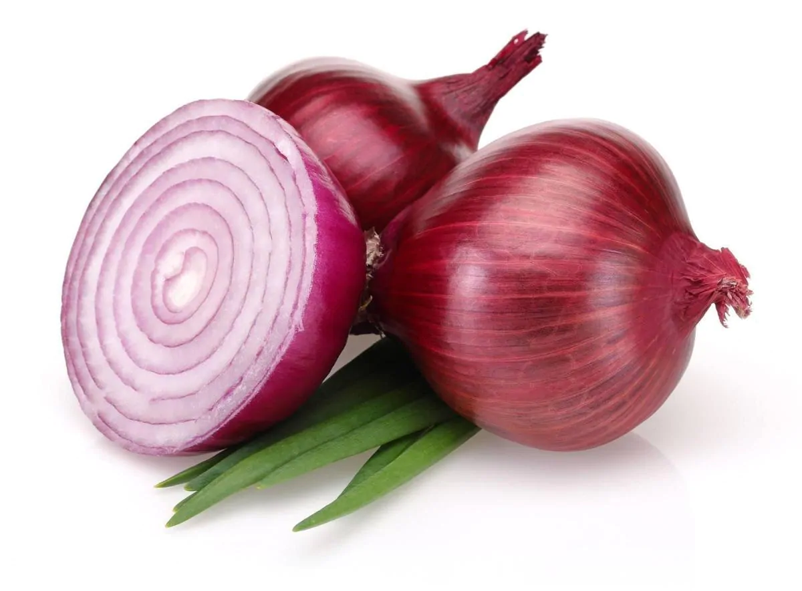
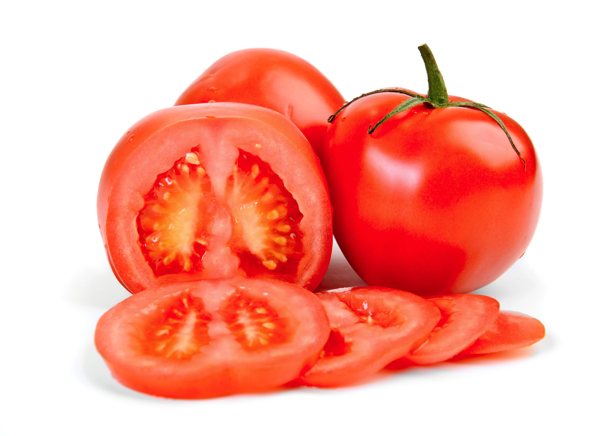
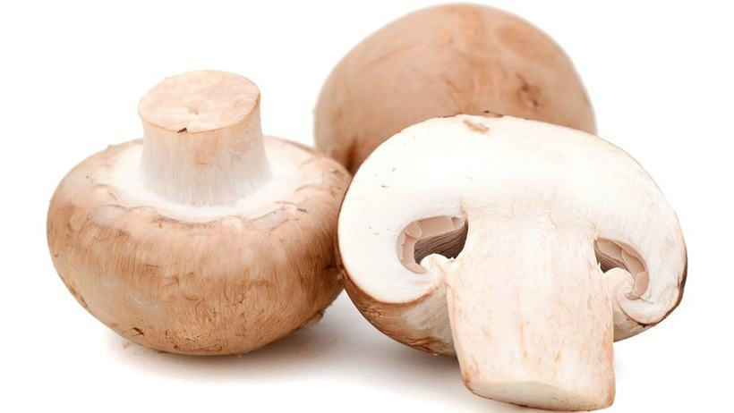
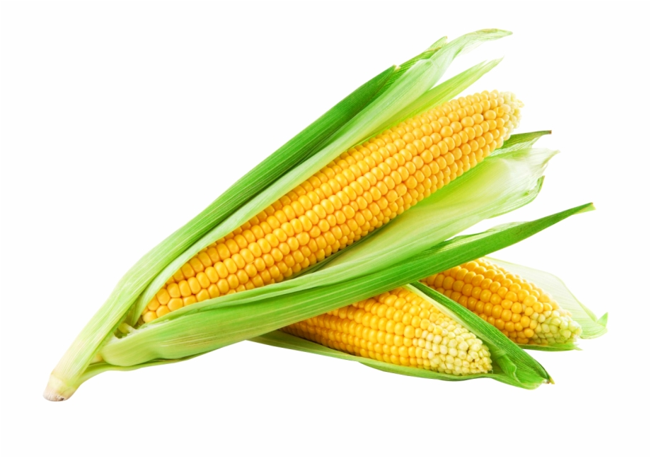

I love cooking and the best base for cooking are vegetables. They come in all shapes, sizes, colors, flavors and seasons. Here I want to introduce you to some of my favorites, to give you some information about them and some recipes to cook them.
Onions
Onions go into EVERY recipe I make.
Tomatoes
Tomatoes are very versatile.
Mushrooms
Not technically a vegetable, but awesome in every way.
Corn
I just love these yellow nuggets.